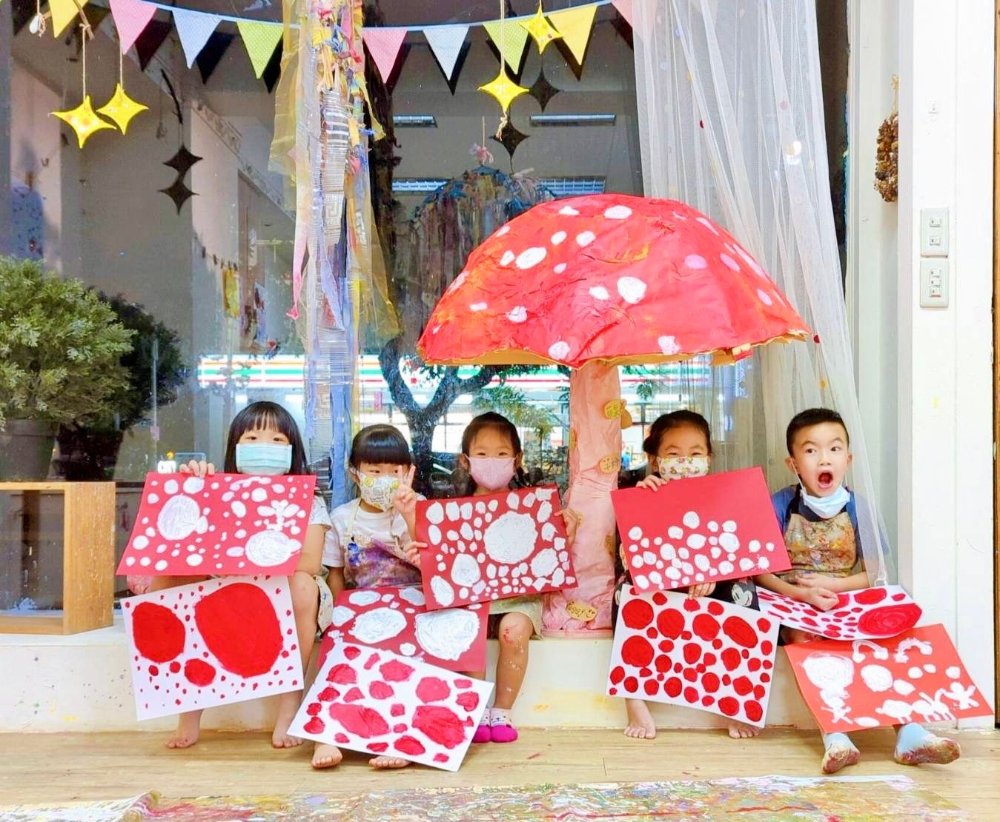
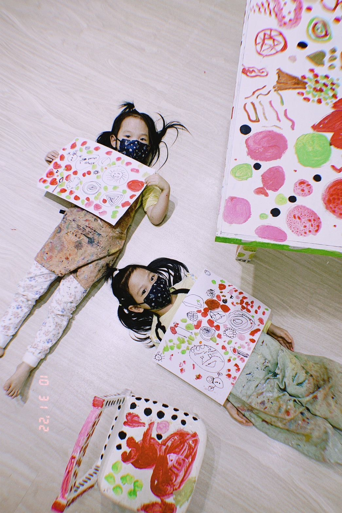

主題介紹
走進大師的創作現場，孩子才真正認識藝術
在大綠地的藝術家賞析課程中，我們不只是講故事，也不只是「介紹藝術家」。
我們要孩子走進藝術家的創作現場，用手、用眼、用心感受他們的世界觀與創作語言。
這堂課我們帶著孩子認識的是來自日本的當代藝術家——草間彌生。
從她獨特的點點風格，到繽紛又強烈的色彩表現，孩子不只是看見作品本身，更深入理解：
藝術是情感與經驗的延伸，而不是技巧的模仿。
我們相信：只有親手實踐，才有真正的內化與連結。


走進大師的創作現場，孩子才真正認識藝術
在大綠地的藝術家賞析課程中，我們不只是講故事，也不只是「介紹藝術家」。
我們要孩子走進藝術家的創作現場，用手、用眼、用心感受他們的世界觀與創作語言。
這堂課我們帶著孩子認識的是來自日本的當代藝術家——草間彌生。
從她獨特的點點風格，到繽紛又強烈的色彩表現，孩子不只是看見作品本身，更深入理解：
藝術是情感與經驗的延伸，而不是技巧的模仿。
我們相信：只有親手實踐，才有真正的內化與連結。
這次，我們帶領孩子實際體驗草間彌生的創作語言：
孩子們從作品中發現：
創作不必複雜，也不一定要像誰，
只要真實地表達自己，就是一種藝術。
藝術賞析不只是看展覽、說故事，
更重要的是讓孩子透過實際創作，去理解藝術家的思維與世界觀，並轉化為自己的表達方式。
當孩子有機會體驗不同藝術家創作的材料、技法與情緒語言，
他們學會的不只是欣賞，更是內化與重組，最終成為他們的生活靈感與創作能量。
在大綠地，藝術不是知識的堆疊，而是感受、觀察、轉化、實踐的過程。